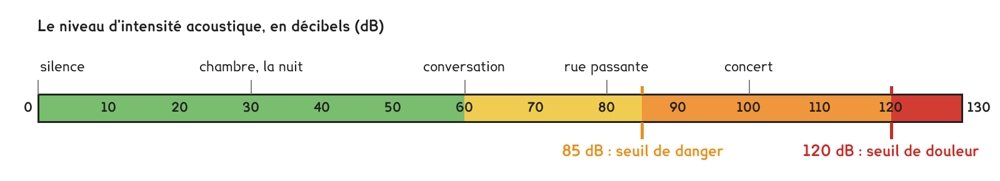
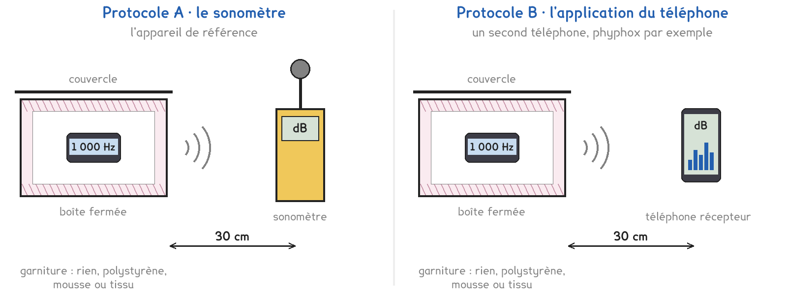

CAP · toutes spécialités · TP commun CAP-06
Quel matériau choisir pour atténuer le bruit ?
2 figures
Sujet. Le téléphone qui sert de réveil sonne à 6 h, et le petit frère qui dort à côté se réveille aussi. On veut poser le téléphone dans une boîte garnie d’un matériau qui étouffe le son.
Problématique : quel matériau choisir pour atténuer le bruit ?
a) Dans la chambre, le son va du téléphone à l’oreille. Entourer.
| Entourer | |
|---|---|
| L’émetteur | le téléphone · l’air · l’oreille |
| Le milieu de propagation | le téléphone · l’air · l’oreille |
| Le récepteur | le téléphone · l’air · l’oreille |
Voici l’échelle des niveaux sonores. Elle se lit, elle ne s’apprend pas.

b) Relever sur l’échelle les deux seuils.
Seuil de danger : …………………… dB · seuil de douleur : …………………… dB
Série · de combien de décibels ? L’atténuation est le niveau sans boîte moins le niveau avec la boîte. Le premier est fait.
| 80 − 65 = 15 dB | 75 − 62 = …………………… dB | 70 − 58 = …………………… dB |
|---|---|---|
| 82 − 70 = …………………… dB | 68 − 55 = …………………… dB | 90 − 72 = …………………… dB |
Le dispositif est commun. Un téléphone émet un son de 1 000 Hz, toujours au même volume, dans une boîte. On mesure à 30 cm : sans boîte, boîte vide, puis boîte garnie de polystyrène, de mousse, de tissu. Deux protocoles pour mesurer.
Protocole A · le sonomètre. Il affiche le niveau en décibels. C’est l’appareil de référence ; le labo en a un ou deux.
Protocole B · l’application du téléphone. Un second téléphone, avec une application comme phyphox. Ses décibels ne sont pas exacts, mais ses écarts sont justes.

c) Compléter le tableau pour comparer les deux protocoles, en entourant.
| Protocole A | Protocole B | |
|---|---|---|
| Combien de postes | un ou deux · tous | un ou deux · tous |
| Les niveaux sont exacts | oui · non | oui · non |
| Les écarts sont justes | oui · non | oui · non |
Le choix se fait maintenant, avant de toucher au matériel. Le professeur peut imposer le protocole qui reste libre.
d) Entourer votre protocole, puis la raison.
Protocole A · Protocole B
parce que : on veut des niveaux exacts · des écarts suffisent
Avant de mesurer, on fait une hypothèse.
e) Le matériau qui atténue le plus, entourer :
le polystyrène · la mousse · le tissu
Avant de commencer
Volume modéré : jamais plus de 85 dB à 30 cm. Le son ne dure que le temps de la mesure.
On ne colle jamais un téléphone qui sonne contre son oreille.
La mesure sans boîte se fait quand le professeur le dit, un poste à la fois.
f) Schématiser le montage : émetteur, boîte et matériau, récepteur, distance.
Le schéma se dessine sur la feuille du TP.
L’atténuation se calcule comme dans la série.
g) Relever les niveaux, puis calculer les atténuations.
Bruit de la salle, téléphone muet : …………………… dB
| sans boîte | boîte vide | polystyrène | mousse | tissu | |
|---|---|---|---|---|---|
| Niveau lu (dB) | |||||
| Atténuation (dB) | 0 |
h) Classer, du plus atténuant au moins atténuant.
1 : ………………………… · 2 : ………………………… · 3 : …………………………
Hypothèse e confirmée : oui · non
i) Relever l’atténuation de la mousse chez un groupe de l’autre protocole.
…………………… dB. Écart de 3 dB au plus avec la vôtre : oui · non
j) Sans boîte, le niveau à 30 cm dépasse-t-il le seuil de danger ?
oui · non. Une mesure proche du bruit de la salle est-elle sûre ? oui · non
Pour finir, on revient au réveil.
k) Quel matériau choisir ? Répondre en une phrase, avec votre mesure.
Ce que ce TP a établi, à écrire sous la dictée du professeur :
À RETENIR
À compléter en classe, sur la feuille du TP.
TP commun de physique-chimie, toutes spécialités. Le travail se fait sur la feuille du TP : cette page en est la version à l'écran, sans les lignes à remplir. Rien n'est enregistré.